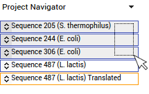

This page is part of the GeneWarrior Documentation. Go to the main site of GeneWarrior
To select an entry click anywhere inside the frame; to unselect it, do the same.
You can select multiple sequences.
If your project contains a lot of entries, an easier way to select multiple sequences is using the Project
navigator on the top left corner.

Drag the mouse over the entries to select them. Alternatively, you can select single sequences by CTRL-Clicking
them.